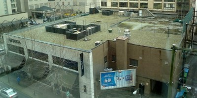

Membrane roofing [RMT3]
Sheet membrane or liquid-applied membrane roofing surface. Sheet membranes will typically be bituminous or synthetic rubber sheet. Examples of liquid-applied membranes are asphalt, and those that are fibreglass-reinforced. Sometimes a membrane system is covered with sand, small stones or stone chip. Most commonly used on a concrete or plywood sheet roof system.

Membrane roofing, Vancouver, Canada (S. Brzev)